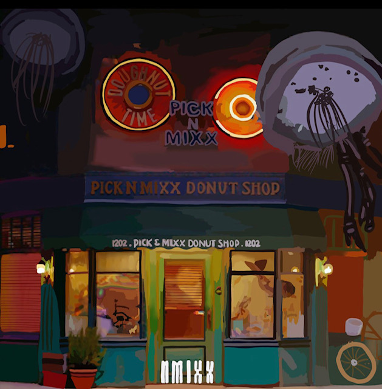
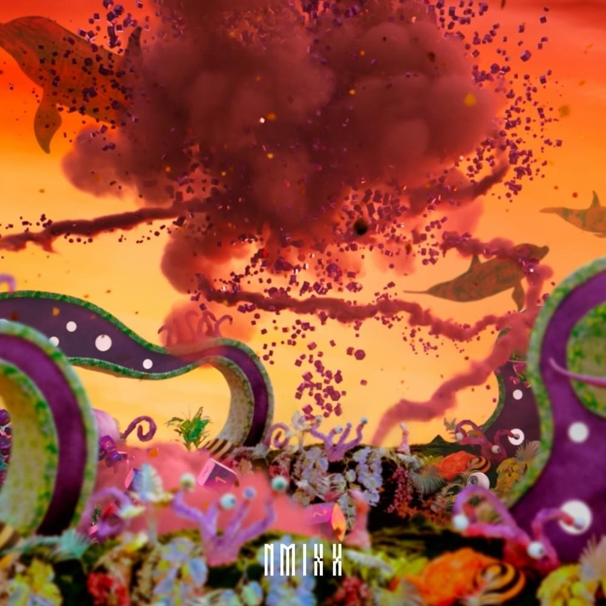
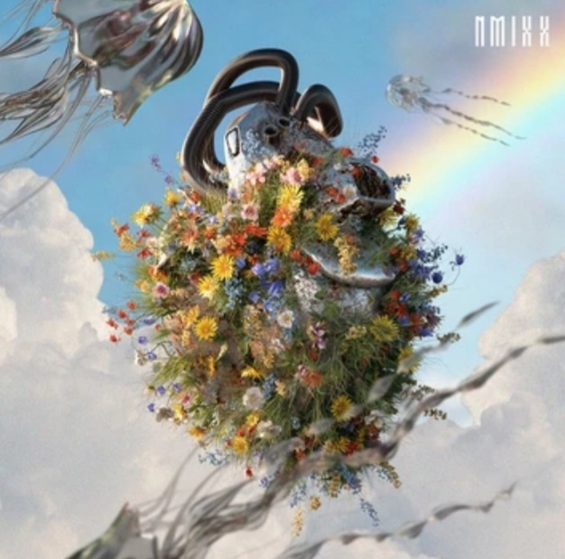

- O.O
Lagu ini merupakan title track dari mini album "ADMARE" debut yang rilis pada tanggal 22 Februari 2022.
- TANK
Lagu ini masuk di dalam mini album "AD MARE". Namun, lagu ini tidak memiliki music video.

- DICE
Lagu ini merupakan title track dari album "ENTWURF" yang rilis pada tanggal 19 September 2022.
- COOL
Lagu ini masuk di dalam mini album "ENTWURF". Lagu ini memiliki Special Video.

- Funky Glitter Christmas
Lagu ini merupakan lagu khusus menyambut Christmas atau natal yang rilis pada tanggal 23 November 2022.

- Young, Dump, Stupid
Lagu ini meruapakan lagu yang ada di dalam mini album Expergo yang dirilis pada tanggal 20 Maret 2023 dan memili MV.
- Love Me Like This
Lagu ini meruapakan lagu title track yang ada di dalam mini album Expergo dan memili MV.
- PAXXWORD
Lagu ini meruapakan lagu yang ada di dalam mini album Expergo dan memili MV.
- Just Did It
Lagu ini meruapakan lagu yang ada di dalam mini album Expergo.
- My Gosh
Lagu ini meruapakan lagu yang ada di dalam mini album Expergo.
- HOME
Lagu ini meruapakan lagu yang ada di dalam mini album Expergo.

- Party O'clock
Lagu ini merupakan lagu title track yang ada di dalam mini album A Midsummer NMIXX's Dream yang di rilis pada tanggal 11 Juli 2023 yang memiliki MV.
- Roller Coaster
Lagu ini merupakan lagu yang ada di dalam mini album A Midsummer NMIXX's Dream yang memiliki MV.